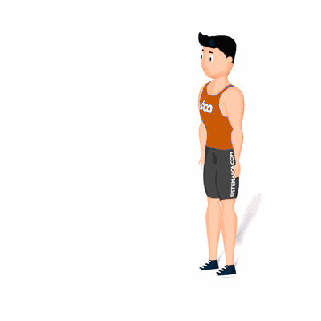

Handstand

Esse exercício é acima de tudo muito bom para equilíbrio e coordenação motora. Aliás, o exercício também expande os músculos do antebraço.
Ficha Técnica
Tipo: CrossFit
Grupo Muscular: Costas
Aparelho: Nenhum
Músculos: Nenhum
Como realizar
- Fique de pé com as pernas levemente espaçadas;
- Leve a perna dominante para a frente;
- Incline o corpo para a frente;
- Mantenha os braços retos conforme as mãos se aproximam do chão;
- Estique as pernas e o tronco para cima e equilibre o peso do corpo nas duas mãos;
- Quando estiver pronto para descer, abra as pernas e leve a perna dominante na direção do chão.
 RC STORE
RC STORE